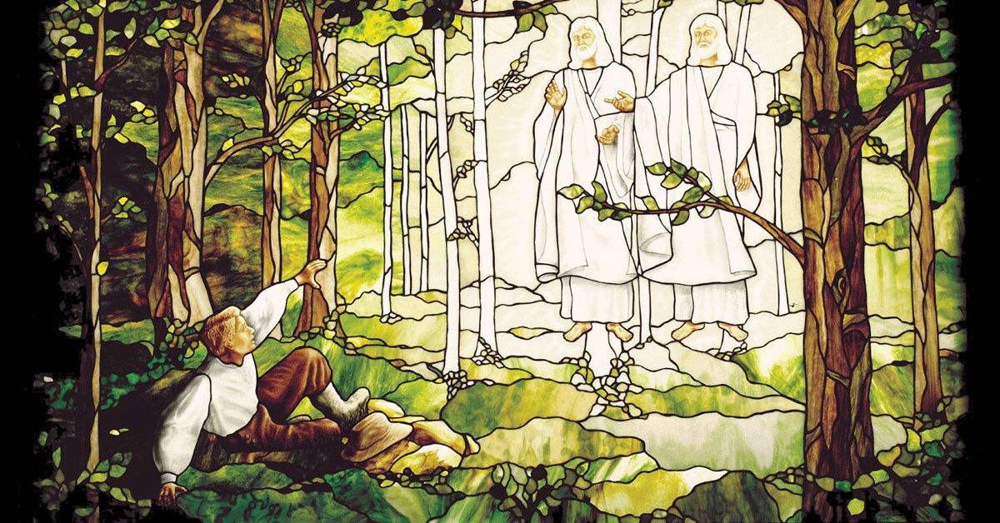
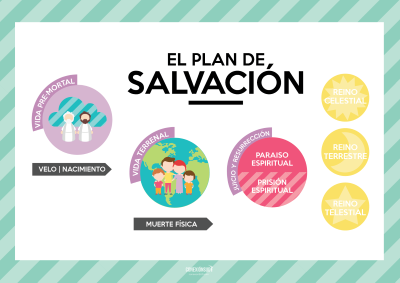
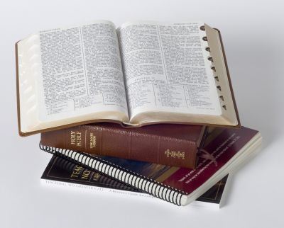

🔍 ¿Qué es el Conocimiento Espiritual?
Dios sabe todas las cosas y es la fuente de toda verdad. Nos ha instado a "buscar conocimiento, tanto por el estudio como por la fe" (D. y C. 88:118). En nuestra búsqueda de la verdad, podemos confiar en Él completamente, dependiendo de Su sabiduría y amor.
- Doctrina y Convenios 6:36
🤲 Actuar con Fe
Actuamos con fe cuando decidimos confiar en Dios y acudir a Él primeramente a través de la oración sincera, el estudio de Sus enseñanzas y la obediencia a Sus mandamientos.
🌅Perspectiva Eterna
Analizamos conceptos y preguntas considerándolos en el contexto del Plan de Salvación y las enseñanzas del Salvador, buscando ver las cosas como el Señor las ve.
📚 Fuentes Divinamente Señaladas
Procuramos mayor comprensión mediante las fuentes que el Señor ha establecido: el Espíritu Santo, las Escrituras, los profetas y líderes de la Iglesia.
🔍 ¿Cómo Evaluar la Fiabilidad de las Fuentes?
- Presidente Dallin H. Oaks
🎯 Intenciones del Autor
¿Cuáles son los títulos, intenciones y posibles predisposiciones del autor?
📍 Proximidad a los Eventos
¿Qué tan cerca está el autor de los acontecimientos que describe?
🕵️ Evidencias Omitidas
¿Ignora el autor intencionalmente evidencias para inducir a error?
⏰ Contexto Histórico
¿Se presentan en el contexto apropiado de tiempo, lugar y circunstancias?
✅ Fuentes Adicionales
¿Se respaldan con otras fuentes confiables adicionales?